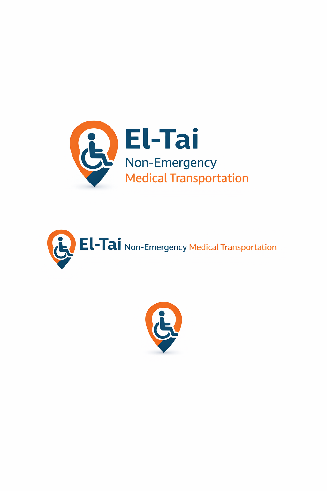

El Tai Transport Services provides reliable and compassionate non-emergency medical transportation throughout Snohomish County, King County, and Pierce County Washington.
Our mission is to help patients safely reach important medical appointments including dialysis treatments, hospital visits, rehabilitation appointments, and routine healthcare checkups.
Our wheelchair accessible vehicles are designed to provide comfortable and safe transportation for individuals with mobility challenges.
We proudly serve communities including Everett, Lynnwood, Marysville, Edmonds, Seattle, Bellevue, Kent, Renton, Tacoma, and surrounding areas.
Our drivers are professional, courteous, and focused on providing dependable transportation for every passenger.